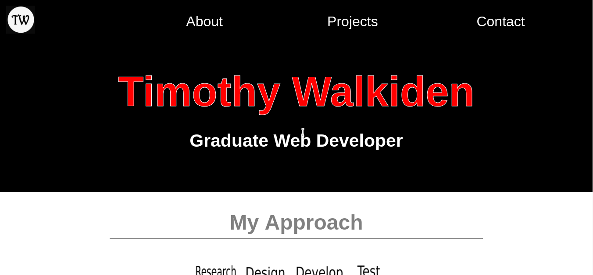

Portfolio Website
The last project I had to carry out at University was to make my own professional portfolio using the latest trends and standards.
Research
Research started by first making a list of requirements on what needs to be included on the website. Once this was done the next stage was to see gather some design inspiration from portfolio website which has won awards. However, at this stage, I did not feel the website was representing my personality so I spent some time creating a list of what I wanted to get across to potential employers. The two main point I wanted to get across was my work process and the skills I have picked up at University.
Design

The design stage started by bringing together all the research to see the trends and what I believe should be on the website. This lead on to the first of the three design stages. The first was to create the mobile layout and then once this was done transfer it into a desktop layout. This was carried out on pen and paper so there could be quick changes. The final stage was to design the content including collecting images, writing content and designing a logo for the website. Final this was all upgraded to be created into a high fidelity prototype by coding the design.
Development

At this stage, the content and design had been placed into to code. This included two style sheets the first for the home page and another one for the other pages. All which was left was to add the functionality and repeat the page to create a page for each project and the other section of the website. Final the links were added and the website was upload to a repository before going live for testing.
Test
At this stage, the website was live but had not been tested. By doing the test while the website was live it meant all the content and content could be tested on all browser and devices. The website was also tested against accessibility standards so all user could use the website.